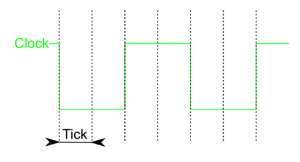

Le menu Simulation
- Simulation Enclanchée Ctrl-E
-
Si cette case est cochée, les circuits visualisés seront "en direct", c'est-à-dire que les valeurs se propageant dans le circuit seront mises à jour à chaque utilisation de l'outil pousser ou modification du circuit.
L'option de menu sera automatiquement décochée si une oscillation est détectée.
- Redémarrer la simulation Ctrl-R
-
Efface tout ce qui concerne l’état du circuit actuel, comme si vous veniez d’ouvrir à nouveau le fichier. Si vous visualisez l'état d'un sous-circuit, tous les états de la hiérarchie sont effacés.
- Simulation pas-à-pas Ctrl-I
-
Avance la simulation d'une étape. Par exemple,au cours d'une étape, un signal peut entrer dans une porte , mais la sortie de la porte n'affichera pas de changement de signal avant la prochaine étape de simulation. Pour aider à identifier les points du circuit global qui ont changé, tous les points dont les valeurs changent sont indiqués par un cercle bleu. Si un sous-circuit contient des points qui ont été modifiés (ou ses sous-circuits, récursivement), alors il sera entouré avec une ligne bleue.
- Simulation VHDL activée
-
pas documenté pour l'instant
- Restarte simulation VHDL
-
pas documenté pour l'instant
- Sortir de la vue
-
Quand vous avez exploré l'état d'un sous circuit pour le debugger a l'aide de son menu local. Le menu | Sortir de la vue | permet d'afficher la vue de l'état des circuits supérieur de la hiérarchie. Les noms de ceux-ci sont présentés dans des options du menu.
- Aller dans la vue
-
De même, le menu | Aller dans la vue | permet de retourner dans la vue des circuits inférieurs de la hiérarchie. Les circuits sont présentés comme des options du menu.
- Un seul tic Ctrl-T
-
Avance d'un tic les horloges dans la simulation quand on utilise le mode pas à pas. Cela peut être utile lorsque vous souhaitez faire avancer les horloges manuellement, en particulier lorsque l’horloge ne se trouve pas dans le même circuit que celui que vous consultez actuellement.
- 'Clk' un pas F2
-
Même fonction que précédèrent, mais si l'horloge nommée clk existe, avance d'une période ou demi-période selon l'option du projet définie dans la fenêtre option. Les autres horloges du projet avancent simultanément proportionnellement à leurs paramètres.
- Tic activé Ctrl-T
-
Active les horloges. Cela n'aura d'effet que si le circuit contient des composants d'horloge (dans la bibliothèque de câblage). L'option est désactivée par défaut.
- Fréquence des tics
-
Vous permet de sélectionner la fréquence des tics. Par exemple, 8 Hz signifie que les tics se produiront huit fois par seconde. Un tic est l'unité de mesure de base pour la vitesse des horloges.
 Exemple: Tic haut = 2, Tic bas = 2, Clock = Fréquence tic / ( 2 + 2)Note: La fréquence des périodes d'horloge sera plus lente que la vitesse d'activation (tic): l'horloge la plus rapide possible aura un cycle haut à un tic et un cycle bas à un tic. Une telle horloge aurait une fréquence de 4 Hz (un cycle complet haut/bas) si la fréquence des tics est à 8 Hz.
- Chronogramme...
-
Module de journalisation, qui facilite l’enregistrement et la sauvegarde automatiques des valeurs d'un circuit au fur et à mesure de la progression de la simulation.
- Vecteur de test...
-
la fenêtre Vecteur de test Permet de vérifier vos circuits grâce à un fichier de vecteur de test qui présenter les entrées et sortie du circuit.
- Assembly viewer
-
pas documenté pour l'instant
Suite: les menus fenêtre et aide.